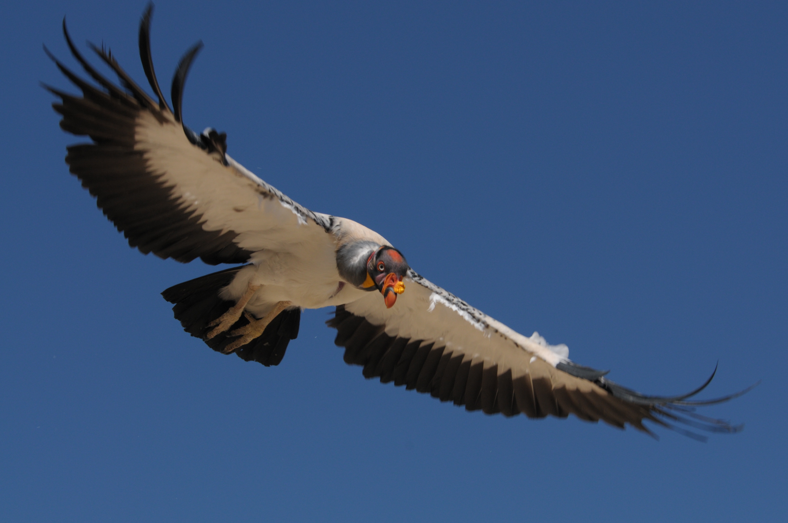
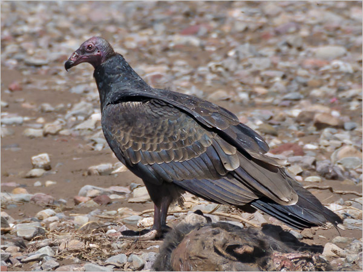

CATÁRTIDOS
Cathartidae
Cathartidae
Características principales

Los catártidos (Cathartidae, que proviene del vocablo griego kathartes, que significa 'los que limpian') son una familia de aves del orden Cathartiformes conocidas vulgarmente como buitres americanos o buitres del Nuevo Mundo. Incluye siete especies que se encuentran distribuidas por casi toda América. Se alimentan de carroña, a veces de vegetales y de pequeños animales vivos. No están directamente emparentados con los buitres del Viejo Mundo, también carroñeros, aunque se parecen mucho debido a la evolución convergente. Los urubús, auras o zopilotes, nombres comunes del género Cathartes figuran entre las muy pocas aves con un buen sentido del olfato.
Naturaleza

Los buitres del Nuevo Mundo suelen ser grandes, y su longitud varía desde el buitre menor de cabeza amarilla, con 56-61 centímetros (22-24 pulgadas), hasta los cóndores de California y de los Andes, que pueden alcanzar los 120 centímetros (48 pulgadas) de longitud y pesar 12 o más kilogramos (26 o más libras). El plumaje es predominantemente negro o marrón, y a veces está marcado con blanco. Todas las especies tienen la cabeza y el cuello sin plumas. En algunos, esta piel es de colores brillantes, y en el buitre real se desarrolla en barbas y excrecencias de colores.
Todos los buitres del Nuevo Mundo tienen alas largas y anchas y una cola rígida, adecuada para volar. Son las mejor adaptadas para volar de todas las aves terrestres. Las patas tienen garras, pero son débiles y no están adaptadas para agarrar. Los dedos delanteros son largos con pequeñas ramificaciones en sus bases. Ningún buitre del Nuevo Mundo posee siringe, el órgano vocal de las aves. Por lo tanto, la voz se limita a gruñidos y siseos poco frecuentes.
El pico es ligeramente ganchudo y es relativamente débil en comparación con los de otras aves de presa. Esto se debe a que está adaptado para desgarrar la carne débil de la carroña parcialmente podrida, en lugar de la carne fresca. Las fosas nasales son ovaladas y están situadas en una suave base o ceroma. El conducto nasal está abierto, no está dividido por un septum, por lo que al mirar desde un lado la cabeza, se puede ver a través del pico. Los ojos son prominentes y, a diferencia de los de las águilas, los halcones y los gavilanes, no están sombreados por un hueso de la ceja. Los miembros de Coragyps y Cathartes tienen una sola fila incompleta de pestañas en el párpado superior y dos filas en el párpado inferior, mientras que Gymnogyps, Vultur y Sarcoramphus carecen totalmente de pestañas.
Los buitres del Nuevo Mundo tienen el inusual hábito de la urohidrosis, o de defecar sobre sus patas para enfriarlas por refrigeración evaporativa. Como este comportamiento también está presente en las cigüeñas, es uno de los argumentos para una estrecha relación entre ambos grupos.